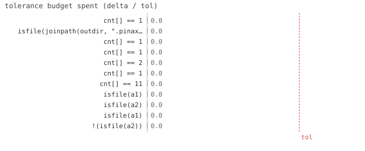

11/11 passed · 0.26s
| id | label | got | want | Δ vs tol (kind) | |
|---|---|---|---|---|---|
| ✓ | t157 | cnt[] == 1 @ test_cache.jl:24 code | 1.0 | 1.0 | 0.0 vs 0.5 (abs) |
| ✓ | t158 | isfile(joinpath(outdir, ".pinax-manifest.toml")) @ test_cache.jl:25 code | 1.0 | 1.0 | 0.0 vs 0.5 (abs) |
| ✓ | t159 | cnt[] == 1 @ test_cache.jl:27 code | 1.0 | 1.0 | 0.0 vs 0.5 (abs) |
| ✓ | t160 | cnt[] == 1 @ test_cache.jl:43 code | 1.0 | 1.0 | 0.0 vs 0.5 (abs) |
| ✓ | t161 | cnt[] == 2 @ test_cache.jl:45 code | 1.0 | 1.0 | 0.0 vs 0.5 (abs) |
| ✓ | t162 | cnt[] == 1 @ test_cache.jl:61 code | 1.0 | 1.0 | 0.0 vs 0.5 (abs) |
| ✓ | t163 | cnt[] == 11 @ test_cache.jl:73 code | 1.0 | 1.0 | 0.0 vs 0.5 (abs) |
| ✓ | t164 | isfile(a1) @ test_cache.jl:88 code | 1.0 | 1.0 | 0.0 vs 0.5 (abs) |
| ✓ | t165 | isfile(a2) @ test_cache.jl:89 code | 1.0 | 1.0 | 0.0 vs 0.5 (abs) |
| ✓ | t166 | isfile(a1) @ test_cache.jl:98 code | 1.0 | 1.0 | 0.0 vs 0.5 (abs) |
| ✓ | t167 | !(isfile(a2)) @ test_cache.jl:99 code | 1.0 | 1.0 | 0.0 vs 0.5 (abs) |

⤓ downloadcnt = Ref(0)
outdir = joinpath(tmp, "hit")
Pinax.reset!()
Pinax.render(; out=outdir)
@test cnt[] == 1 # materialized once@test isfile(joinpath(outdir, ".pinax-manifest.toml"))Pinax.render(; out=outdir) # same doc + outdir -> key unchanged, asset present
@test cnt[] == 1 # cache hit: gen NOT called againcnt = Ref(0)
outdir = joinpath(tmp, "force")
Pinax.reset!()
Pinax.render(; out=outdir)
@test cnt[] == 1Pinax.render(; out=outdir, force=true)
@test cnt[] == 2 # force bypasses the cachecnt = Ref(0)
outdir = joinpath(tmp, "codechange")
Pinax.reset!()
Pinax.render(; out=outdir)
@test cnt[] == 1Pinax.reset!()
Pinax.render(; out=outdir)
@test cnt[] == 11 # miss: gen called againoutdir = joinpath(tmp, "orphan")
Pinax.reset!()
Pinax.render(; out=outdir)
a1 = joinpath(outdir, "assets", "figures", "p", "s", "s_fig1.svg")
a2 = joinpath(outdir, "assets", "figures", "p", "s", "s_fig2.svg")
@test isfile(a1)@test isfile(a2)Pinax.reset!()
Pinax.render(; out=outdir)
@test isfile(a1) # still referenced@test !isfile(a2) # orphan cleaned up{kind=link}